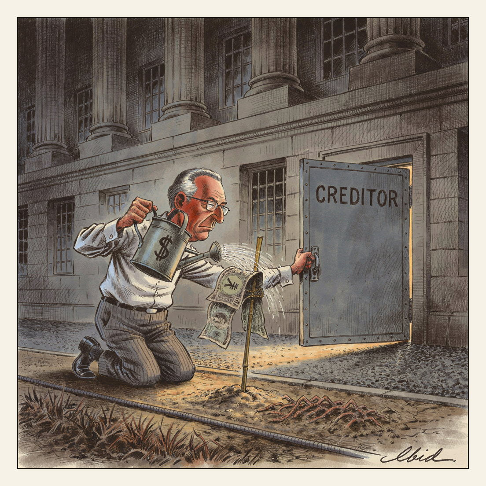

Debt service.
Groundskeeping

U.S. federal debt topped $40 trillion for the first time this week, the Treasury Department reported — roughly double its 2017 level. Annual interest on the debt now exceeds $1 trillion, making it the government's second-largest expense after Social Security. Treasury Secretary Scott Bessent announced an expanded bond buy-back program, and Treasury had earlier taken steps to prop up the Japanese yen so Japan would not be tempted to sell some of its U.S. Treasurys.